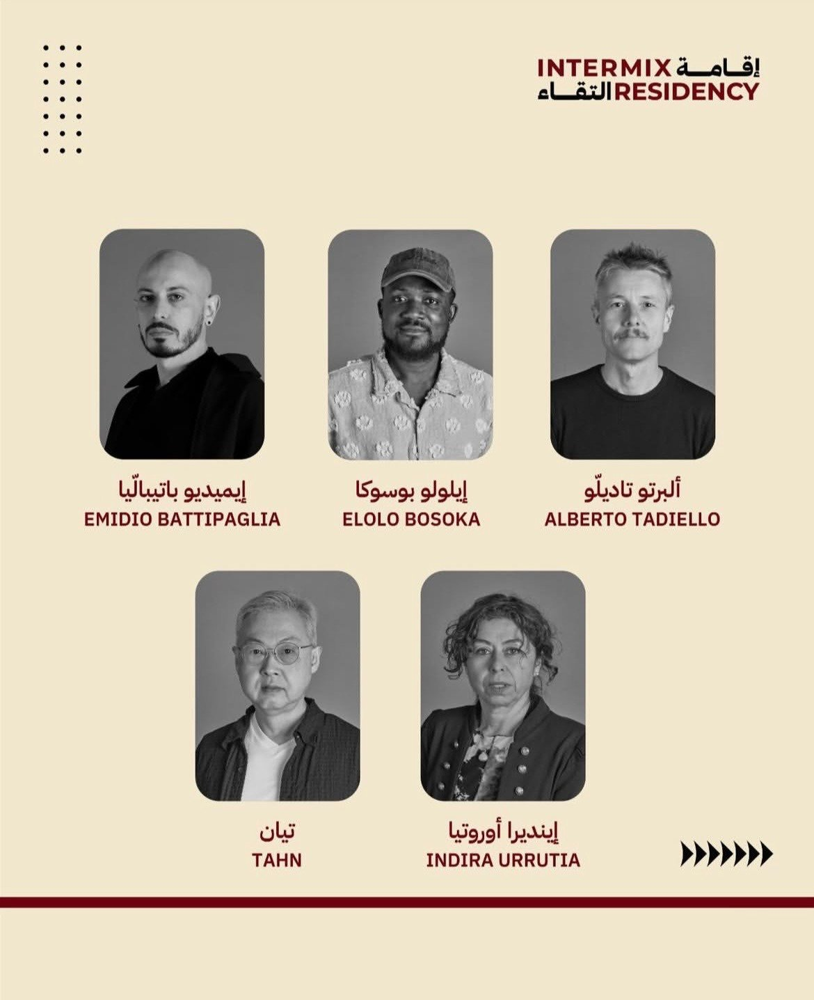
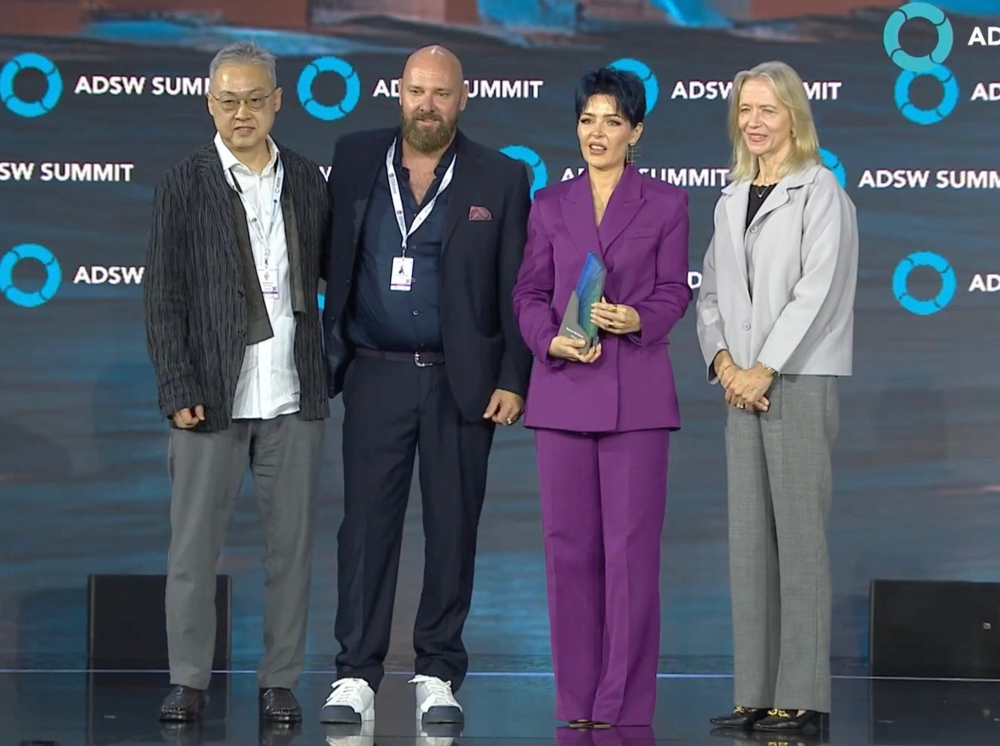
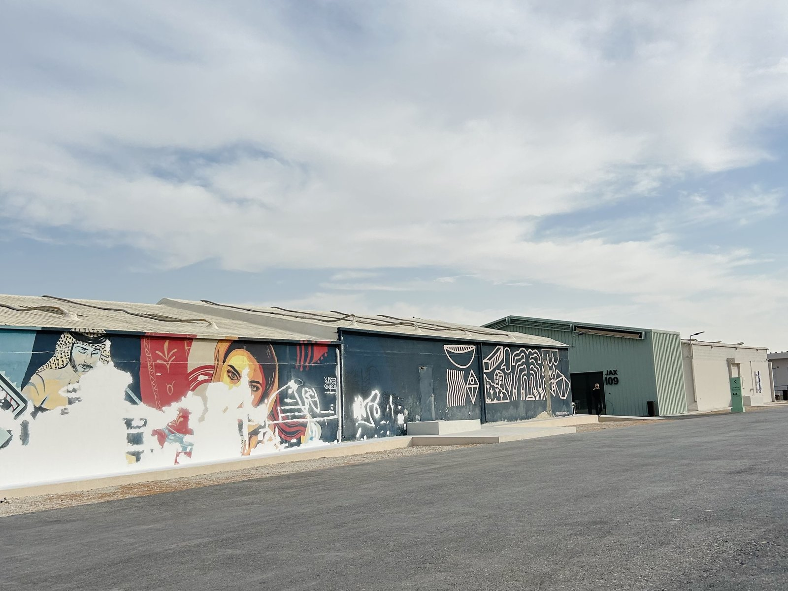
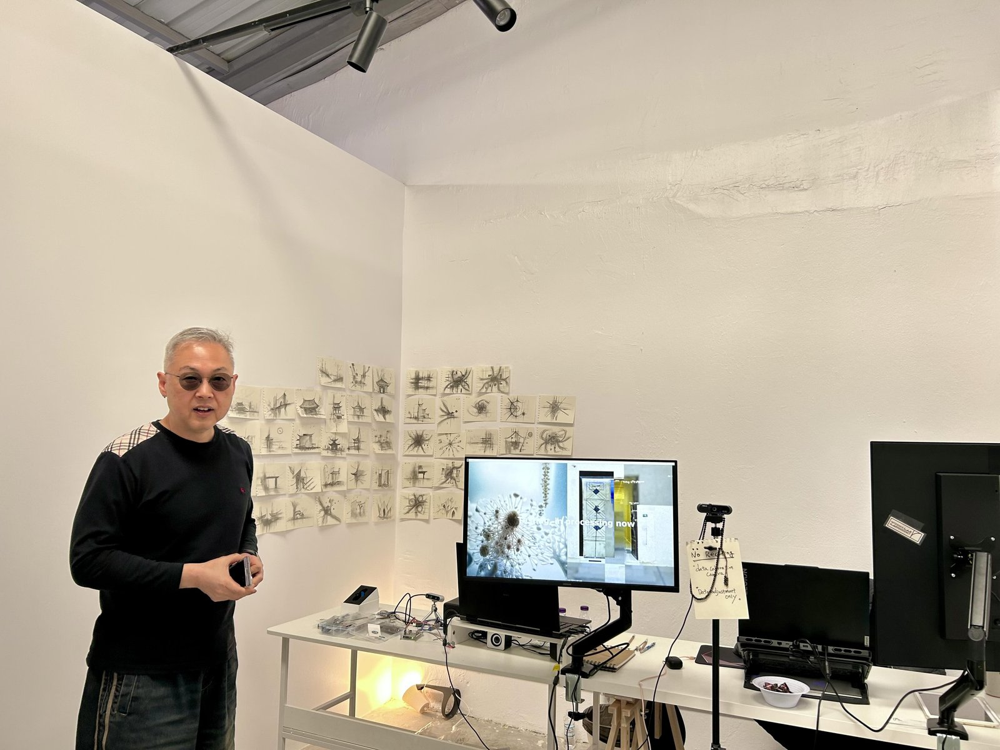
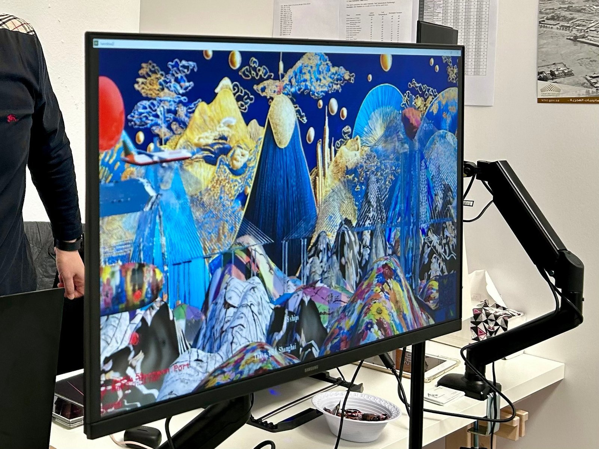
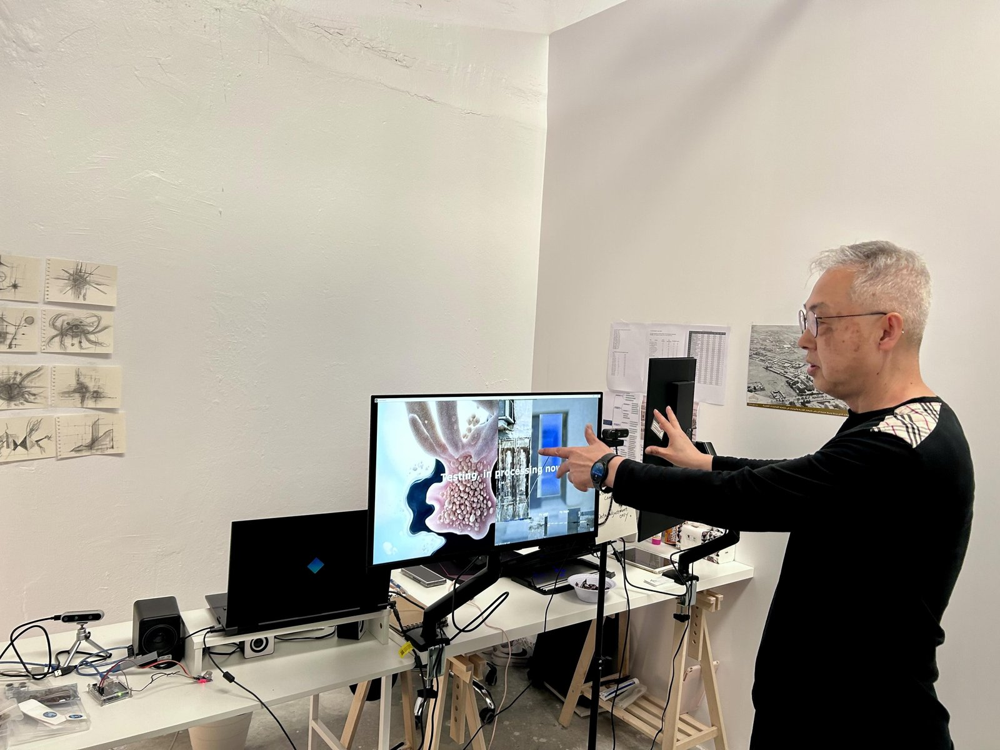

사우디아라비아 문화부 산하 비주얼 아트 커미션(Visual Arts Commission)은 2020년 설립된 기관으로, 회화·조각·사진 등 시각예술 분야의 창작 활동과 산업 발전을 지원하고 관련 정책을 추진하고 있다. 이 기관은 사우디 정부가 문화 산업 육성을 위해 설립한 11개 문화위원회 가운데 하나로, 전시와 포럼, 레지던시 프로그램 등을 통해 국내외 예술가 간 교류를 확대하고 있다. 2025년에는 한국문화예술위원회(ARKO)와 함께 서울에서 시각예술 포럼 〈아트 앤 아이디어스(Art & Ideas)〉를 공동 개최하며, 서울과 리야드를 잇는 문화 교류 논의를 진행하기도 했다.
현재 비주얼 아트 커미션은 국제 예술가 교류 프로그램 〈인터믹스 레지던시(Intermix Residency)〉를 운영하고 있다. 해당 프로그램은 2월부터 4월까지 약 3개월간 진행되며, 전 세계에서 총 15명의 작가가 오픈콜을 통해 선발되어 참여했다. 이 가운데 한국 작가 티안(Tahn)이 레지던시에 참여해 작품 활동을 이어가고 있다.

▲ '인터믹스 레지던시(Intermix Residency)' 참여 아티스트 — 출처: 사우디 비주얼 아트 커미션 인스타그램(@visualarts_moc)
뉴미디어 아티스트 티안(Tahn)
뉴미디어 아티스트 티안(Tahn, 본명 안태영)은 디지털 아트와 미디어 기반 작업을 중심으로 활동하며 국제적으로 주목받고 있다. 최근 그는 〈아부다비 지속가능성 주간(Abu Dhabi Sustainability Week)〉에서 열린 〈글로벌 디지털 아트 컴피티션(Global Digital Art Competition)〉에서 2위를 수상했다. 시상식에서 마리에 웨스터만(Mariet Westermann) 구겐하임 미술관 관장은 티안의 작품 〈메모리 리튼(Memory Rewritten)〉을 언급하며, 이 작품이 관객의 실시간 뇌파 데이터(EEG), 글로벌 뉴스 데이터, 윤리적으로 학습된 인공지능(AI)을 활용해 한국전쟁과 관련된 트라우마를 재해석한다고 설명했다. 또한 웨스터만 관장은 티안의 작품이 아랍 문화권의 평화 상징을 결합해, 인간의 주체성과 기술이 보다 포용적이고 공감적인 미래를 함께 만들어갈 수 있음을 보여준다고 평가했다.

▲ '아부다비 지속가능성 주간' 디지털 아트 공모전 시상식에서 티안 작가(왼쪽 첫번째)와 마리에 웨스터만 구겐하임 미술관 관장(오른쪽 네번째) — 출처: 아부다비 지속가능성 주간(ADSW) 유튜브(@ADSWagenda)
현재 티안 작가는 사우디아라비아 비주얼 아트 커미션의 인터믹스 레지던시 프로그램에 참여해 새로운 작업을 진행하고 있다. 통신원은 레지던시 스튜디오가 위치한 리야드 잭스 디스트릭트(JAX District)를 방문해 뉴미디어 아티스트 티안을 만나 이번 프로그램 참여 경험과 작품 세계에 대해 이야기를 나눴다.

▲ 레지던시가 위치한 잭스 디스트릭트(JAX District) 전경 — 출처: 통신원 촬영

▲ 레지던시 스튜디오 내 티안 작가의 작업공간 — 출처: 통신원 촬영
인터뷰
Q. 작가님은 어떻게 뉴미디어 아티스트가 되었나요?
뉴미디어 아티스트 티안(Tahn)은 학부에서 심리학을 전공한 뒤, 미국으로 건너가 멀티미디어를 공부하며 예술적 시야를 확장했다. 이어 현대무용 석사 과정을 통해 '공간'에 대한 이해를 심화했으며, 2차원적 표현만으로는 부족함을 느껴 3차원의 시공간을 작품에 접목하는 방식에 관심을 갖게 됐다. 무용은 그의 미술 작업에 큰 영향을 미쳤다. 티안은 이후 문화콘텐츠 분야 박사 과정을 시작했으며, 과거에는 대학 미술학과에서 강의를 오랫동안 진행했지만, 국제적 활동이 늘어나면서 현재는 강의 대신 작품 활동에 집중하고 있다.
Q. 사우디 레지던시에 참여한 소감은 어떠신가요?
그는 이번이 사우디아라비아 첫 방문이자, 레지던시 프로그램 참여도 처음이라고 밝혔다. 그는 "모든 환경이 새롭게 느껴진다"고 소감을 전하며, "아직 사우디에 온 지 한 달도 되지 않았고 라마단 기간이라 도시를 충분히 둘러볼 기회는 많지 않았다"고 말했다. 티안은 사우디의 '비전 2030' 정책에 관심이 있었으며, 중동 지역에서 작품 활동을 해보고 싶다는 뜻을 전했다. 또한 "과거 한국 아버지 세대가 사우디 건설 현장에서 일했던 역사도 개인적으로 의미 있게 느껴졌다"고 밝혔다. 다만 티안은 작업 환경과 관련해 일부 아쉬움을 전했다. 그는 "잭스 디스트릭트(JAX District)의 레지던시 스튜디오 공간이 제 작업에는 다소 작은 편"이라며, "대형 스크린에 미디어 작업을 투사하며 진행해야 하는데, 현재 스튜디오에서는 이러한 작업을 충분히 확인하기에는 공간이 조금 협소하다"고 설명했다.
Q. 투와이크 조각 심포지엄(Tuwaiq Sculpture Symposium)에서 선보인 작품에 대해 설명해 주시겠습니까?
티안(Tahn)은 자신의 작품에 대해 "제가 만드는 미디어아트는 항공기 운항 횟수, 날씨, 바람 등 다양한 데이터를 기반으로 영상을 생성하며, 여기에 관람객의 움직임과 반응이 센서를 통해 작품에 반영되는 방식"이라고 설명했다. 관람객의 움직임은 작품 속에 흔적으로 남아 시간이 지날수록 누적되며 변화하는 모습을 보여준다. 그는 이번 사우디 전시에서의 작업 방식에 대해 "원래 제 작업은 실시간 데이터를 수집해 이미지와 영상을 생성하는 방식인데, 사우디에서는 보안 문제로 인해 데이터를 미리 수집해 작업을 진행했다"고 밝혔다. 또한 "이번 조각 전시는 사전에 계획된 프로젝트가 아니라 갑작스럽게 참여하게 되어 장비 환경에서 아쉬운 점도 있었다"고 덧붙였다. 그럼에도 티안은 "사우디 조각전시에서 처음으로 제 미디어아트를 선보일 수 있어 의미 있는 경험이었다"고 평가하며, 자신의 작품을 "물리적인 조각은 아니지만, 대신 데이터와 이미지, 시간과 빛을 활용한 '조각'이라고 볼 수 있다"고 정의했다.

▲ 조각 전시에서 건물 외벽에 상영된 작품 영상을 모니터로 재생한 모습 — 출처: 통신원 촬영
Q. 작가님의 작품 특징은 무엇인가요?
뉴미디어 아티스트 티안(Tahn)은 자신의 작업을 설명하며 "일반적인 미디어아트는 작품이 반복적으로 초기화되는 경우가 많지만, 제 작업은 데이터와 관람객의 흔적이 계속 누적된다는 특징이 있다"고 밝혔다. 그는 이어 "저는 인공지능과 미디어 기술을 도구로 사용하지만, 결국 그 결과물을 다시 아날로그 형태의 기록으로 남기는 작업을 한다"고 설명했다. 티안의 작업에서 또 하나의 특징은 이미지와 데이터를 DNA 형태로 저장하는 점이다. 데이터는 DNA 염기서열로 변환되어 연구소에 보존되며, 이렇게 저장된 데이터는 수만 년이 지나도 복원 가능하다. 티안은 이를 두고 "마치 공룡 화석처럼 미래 세대가 데이터를 다시 발견하고 해석할 수 있는 가능성을 열어주는 방식"이라고 평가했다.
Q. 현재 가장 관심을 두고 있는 작업 주제는 무엇인가요?
그는 사우디에서의 작품 활동과 관련해 "1970년대 사우디에서 일했던 한국 노동자 세대의 이야기에 관심이 있다"고 밝혔다. 그는 "당시 많은 한국인들이 사우디에서 다리와 건물, 발전소 등 다양한 인프라를 건설했다"며, "그들의 노동과 땀은 지금의 사우디 도시 환경 속에 여전히 남아 있다"고 설명했다. 티안은 이어 "현재 사우디 건설 현장에서 일하는 노동자들의 모습은 당시 한국 노동자들의 모습과도 겹쳐 보인다"고 말하며, "한국의 아버지 세대가 철과 시멘트로 사우디의 인프라를 구축했다면, 저는 디지털 방식으로 이곳에 새로운 문화적 인프라를 만들고 싶다"고 밝혔다.

▲ 작품을 설명하는 티안(Tahn) 작가 — 출처: 통신원 촬영
Q. 사우디와 한국 간 시각예술 교류에 대해 어떻게 전망하시나요?
뉴미디어 아티스트 티안(Tahn)은 한국과 사우디아라비아 간 예술 교류에 대해 "아직 교류가 많지 않은 것 같아 아쉬운 마음이 있다"고 말했다. 그는 "두 나라는 1970년대 건설 산업을 통해 이미 깊은 역사적 연결을 갖고 있다"고 설명했다. 티안은 이어 "인공지능과 미디어아트 분야에서는 사우디가 한국보다 더 좋은 환경을 갖추고 있다고 느꼈다"고 덧붙였다. 개인 작가가 감당하기 어려운 장비나 기술적 지원이 비교적 잘 마련되어 있기 때문이라고 설명하며, 특히 사우디 내 다른 예술 기관 중 뉴미디어와 디지털 아트에 특화된 '디리야 아트 퓨처스(Diriyah Art Futures)'에 관심이 있다고 전했다. 그는 "현재 참여하고 있는 레지던시 프로그램이 끝난 이후에도 이곳에서 작업을 이어가 보고 싶다"며, "앞으로 더 많은 한국 작가들이 사우디에서 활동하며 양국 간 예술 교류가 활발해지기를 기대한다"고 밝혔다.
사진출처 및 참고자료
통신원 촬영
사우디 비주얼 아트 커미션(Visual Arts Commission) 공식 웹사이트, visualarts.moc.gov.sa
사우디 비주얼 아트 커미션 인스타그램(@visualarts_moc), instagram.com
사우디페디아(Saudipedia), saudipedia.com
아부다비 지속가능성 주간(Abu Dhabi Sustainability Week, ADSW), abudhabisustainabilityweek.com
아부다비 지속가능성 주간 유튜브(@ADSWagenda), youtube.com